Inverted Pendulum: Digital Controller Design
Key MATLAB commands used in this tutorial are: ss , c2d , ctrb , obsv , dlqr , lsim , plotyy , eig , place
Contents
In this digital control version of the inverted pendulum problem, we will use the state-space method to design the digital controller. If you refer to the Inverted Pendulum: System Modeling page, the linearized state-space equations were derived as:
(1)![$$
\left[{\begin{array}{c}
\dot{x}\\ \ddot{x}\\ \dot{\phi}\\ \ddot{\phi}
\end{array}}\right] =
\left[{\begin{array}{cccc}
0&1&0&0\\
0&\frac{-(I+ml^2)b}{I(M+m)+Mml^2}&\frac{m^2gl^2}{I(M+m)+Mml^2}&0\\
0&0&0&1\\
0&\frac{-mlb}{I(M+m)+Mml^2}&\frac{mgl(M+m)}{I(M+m)+Mml^2}&0
\end{array}}\right]
\left[{\begin{array}{c}
x\\ \dot{x}\\ \phi\\ \dot{\phi}
\end{array}}\right]+
\left[{\begin{array}{c}0\\
\frac{I+ml^2}{I(M+m)+Mml^2}\\
0 \\
\frac{ml}{I(M+m)+Mml^2}
\end{array}}\right]u$$](Content/InvertedPendulum/Control/Digital/html/InvertedPendulum_ControlDigital_eq60747.png)
(2)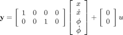
where:
(M) mass of the cart 0.5 kg
(m) mass of the pendulum 0.2 kg
(b) coefficient of friction for cart 0.1 N/m/sec
(l) length to pendulum center of mass 0.3 m
(I) mass moment of inertia of the pendulum 0.006 kg.m^2
(F) force applied to the cart
(x) cart position coordinate
(theta) pendulum angle from vertical (down)
For this problem the outputs are the cart's displacement (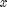 in meters) and the pendulum angle (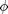 in radians) where represents the deviation of the pedulum's position from equilibrium, that is, 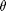 = 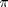 + .
The design criteria for this system for a 0.2-m step in desired cart position are as follows:
- Settling time for and theta of less than 5 seconds
- Rise time for of less than 0.5 seconds
- Pendulum angle never more than 20 degrees (0.35 radians) from the vertical
- Steady-state error of less than 2% for and
Discrete state-space
Our first step in designing a digital controller is to convert the above continuous state-space equations to a discrete form. We will accomplish this employing the MATLAB function c2d. This function requires that we specify three arguments: a continuous system model, the sampling time (Ts in sec/sample), and the 'method'. You should already be familiar with how to construct a state-space system from , , 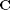, and matrices.
In choosing a sample time, note that it is desired that the sampling frequency be fast compared to the dynamics of the system. One measure of a system's "speed" is its closed-loop bandwidth. A good rule of thumb is that the sampling time be smaller than 1/30th of the closed-loop bandwidth frequency which can be determined from the closed-loop Bode plot.
Assuming that the closed-loop bandwidth frequencies are around 1 rad/sec for both the cart and the pendulum, let the sampling time be 1/100 sec/sample. The discretization method we will use is the zero-order hold ('zoh'). For further details, refer to the Introduction: Digital Controller Design page. Now we are ready to use c2d function. Enter the following commands into an m-file. Running this m-file in the MATLAB command window gives you the following four matrices representing the discrete time state-space model.
M = 0.5; m = 0.2; b = 0.1; I = 0.006; g = 9.8; l = 0.3; p = I*(M+m)+M*m*l^2; %denominator for the A and B matrices A = [0 1 0 0; 0 -(I+m*l^2)*b/p (m^2*g*l^2)/p 0; 0 0 0 1; 0 -(m*l*b)/p m*g*l*(M+m)/p 0]; B = [ 0; (I+m*l^2)/p; 0; m*l/p]; C = [1 0 0 0; 0 0 1 0]; D = [0; 0]; states = {'x' 'x_dot' 'phi' 'phi_dot'}; inputs = {'u'}; outputs = {'x'; 'phi'}; sys_ss = ss(A,B,C,D,'statename',states,'inputname',inputs,'outputname',outputs); Ts = 1/100; sys_d = c2d(sys_ss,Ts,'zoh')
sys_d =
a =
x x_dot phi phi_dot
x 1 0.009991 0.0001336 4.453e-07
x_dot 0 0.9982 0.02672 0.0001336
phi 0 -2.272e-05 1.002 0.01001
phi_dot 0 -0.004544 0.3119 1.002
b =
u
x 9.086e-05
x_dot 0.01817
phi 0.0002272
phi_dot 0.04544
c =
x x_dot phi phi_dot
x 1 0 0 0
phi 0 0 1 0
d =
u
x 0
phi 0
Sample time: 0.01 seconds
Discrete-time state-space model.
Now we have obtained the discrete state-space model of the form:
(3)![$$\left[{\begin{array}{c}
x(k+1)\\ \dot{x}(k+1)\\ \*\phi(k+1)\\ *\dot{\phi}(k+1)
\end{array}}\right]=
\left[{\begin{array}{cccc}
1&0.01&0.0001&0\\
0&0.9982&0.0267&0.0001\\
0&0&1.0016&0.01\\
0&-0.0045&0.3119&1.0016
\end{array}}\right]
\left[{\begin{array}{c}
x(k)\\ \dot{x}(k)\\ *\phi(k)\\ *\dot{\phi}(k)
\end{array}}\right]
+
\left[{\begin{array}{c}
0.0001\\ 0.0182\\ 0.0002\\ 0.0454
\end{array}}\right]u(k)$$](Content/InvertedPendulum/Control/Digital/html/InvertedPendulum_ControlDigital_eq14148.png)
(4)![$${\bf y}(k) = \left[{\begin{array}{cccc}1&0&0&0\\0&0&1&0\end{array}}\right]
\left[{\begin{array}{c}
x(k)\\ \dot{x}(k)\\ *\phi(k)\\ *\dot{\phi}(k)
\end{array}}\right]
+\left[{\begin{array}{c}0\\0\end{array}}\right]u(k)$$](Content/InvertedPendulum/Control/Digital/html/InvertedPendulum_ControlDigital_eq01914.png)
Controllability and observability
The next step is to check the controllability and the observability of the system. For the system to be completely state controllable, the controllability matrix
(5)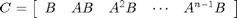
must have the rank of n. The rank of the matrix is the number of independent rows (or columns). In the same token, for the system to be completely state observable, the observability matrix
(6)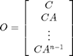
must also have the rank of n. These tests for controllability and observability are identical to the situation of continuous control except that now the state space model is discrete.
Since the number of state variables in our system is 4, the rank of both matrices must be 4. The function rank can give you the rank of each matrix. Adding the following commands to your m-file and running in the MATLAB command window will generate the results shown below.
co = ctrb(sys_d); ob = obsv(sys_d); controllability = rank(co) observability = rank(ob)
controllability =
4
observability =
4
This proves that our discrete system is both completely state controllable and completely state observable.
Control design via pole placement
The schematic of a full-state feedback control system is shown below.

The next step is to assume that all four states are measurable and design the control gain matrix . If you refer to the continuous Inverted Pendulum: State-Space Methods for Controller Design page the Linear Quadratic Regulator (LQR) method was used to find the control gain matrix . In this digital version, we will use the same LQR method. This method allows you to find the control gain that results in the optimal balance between system errors and control effort. Please consult your control textbook for details. To use this LQR method, we need to specify two parameters, the performance index matrix 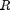 and the state-cost matrix 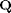. For simplicity, we will initially choose the performance index matrix 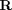 equal to 1, and the state-cost matrix equal to . The relative weightings of these two matrices will then be tuned by trial and error. The state-cost matrix has the following structure.
(7)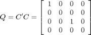
The element in the (1,1) position of represents the weight on the cart's position and the element in the (3,3) position represents the weight on the pendulum's angle.
Now we are ready to find the control gain matrix and observe the resulting closed-loop response of the system. Since we are designing a digital controller, we will specificially employ the MATLAB function dlqr. Add the following commands to a your m-file and run it in the MATLAB command window. Note that in the following we are overwriting the values of the state-space matrices , , , and with their discrete-time equivalents using the model derived with the c2d command above.
A = sys_d.a;
B = sys_d.b;
C = sys_d.c;
D = sys_d.d;
Q = C'*C
R = 1;
[K] = dlqr(A,B,Q,R)
Ac = [(A-B*K)];
Bc = [B];
Cc = [C];
Dc = [D];
states = {'x' 'x_dot' 'phi' 'phi_dot'};
inputs = {'r'};
outputs = {'x'; 'phi'};
sys_cl = ss(Ac,Bc,Cc,Dc,Ts,'statename',states,'inputname',inputs,'outputname',outputs);
t = 0:0.01:5;
r =0.2*ones(size(t));
[y,t,x]=lsim(sys_cl,r,t);
[AX,H1,H2] = plotyy(t,y(:,1),t,y(:,2),'plot');
set(get(AX(1),'Ylabel'),'String','cart position (m)')
set(get(AX(2),'Ylabel'),'String','pendulum angle (radians)')
title('Step Response with Digital LQR Control')
Q =
1 0 0 0
0 0 0 0
0 0 1 0
0 0 0 0
K =
-0.9384 -1.5656 18.0351 3.3368
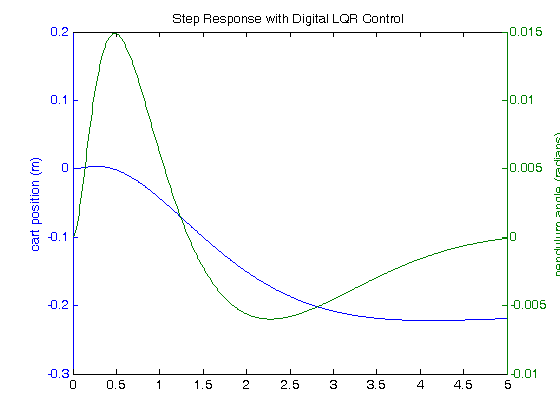 The curve in green represents the pendulum's angle in radians, and the curve in blue represents the cart's position in meters. As you can see, this plot is not satisfactory. The pendulum and cart's overshoot appear fine, but their settling times need improvement and the cart's rise time needs to be reduced. As I'm sure you have noticed, the cart's final position is also not near the desired location but has in fact moved in the opposite direction. This error will be dealt with in the next section and right now we will focus on the settling and rise times. Go back to your m-file and change the matrix to see if you can get a better response. You will find that increasing the (1,1) and (3,3) elements makes the settling and rise times go down, and lowers the angle the pendulum moves. In other words, you are putting more weight on the errors at the cost of increased control effort 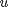. Modifying your m-file so that the (1,1) element of is 5000 and the (3,3) element is 100, will produce the following value of and the step response shown below.
A = sys_d.a;
B = sys_d.b;
C = sys_d.c;
D = sys_d.d;
Q = C'*C;
Q(1,1) = 5000;
Q(3,3) = 100
R = 1;
[K] = dlqr(A,B,Q,R)
Ac = [(A-B*K)];
Bc = [B];
Cc = [C];
Dc = [D];
states = {'x' 'x_dot' 'phi' 'phi_dot'};
inputs = {'r'};
outputs = {'x'; 'phi'};
sys_cl = ss(Ac,Bc,Cc,Dc,Ts,'statename',states,'inputname',inputs,'outputname',outputs);
t = 0:0.01:5;
r =0.2*ones(size(t));
[y,t,x]=lsim(sys_cl,r,t);
[AX,H1,H2] = plotyy(t,y(:,1),t,y(:,2),'plot');
set(get(AX(1),'Ylabel'),'String','cart position (m)')
set(get(AX(2),'Ylabel'),'String','pendulum angle (radians)')
title('Step Response with Digital LQR Control')
Q =
5000 0 0 0
0 0 0 0
0 0 100 0
0 0 0 0
K =
-61.9933 -33.5040 95.0597 18.8300
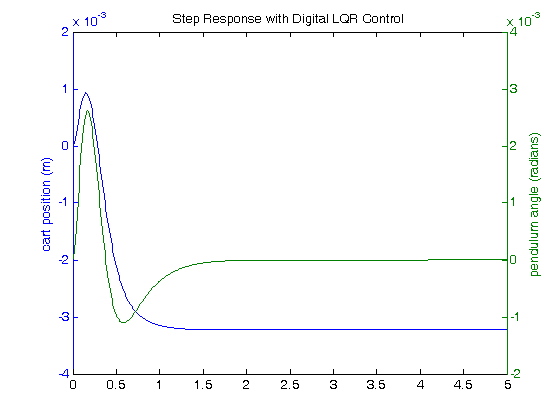 From this plot, we see that all design requirements are satisfied except the steady-state error of the cart position . We can easily correct this by introducing a feedforward scaling factor 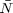.
Precompensator design
Unlike other design methods, the full-state feedback system does not compare the output directly to the reference, rather, it compares the state vector multiplied by the control matrix (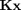) to the reference (see the schematic shown above). Thus, we should not expect the output to converge to the commanded reference. To obtain the desired output, we need to scale the reference input so that the output equals the reference. This can be easily done by introducing a feedforward scaling factor . The basic full state-feedback schematic with scaling factor is shown below.

Unfortunately, we cannot use our user-defined function rscale to find because this function was defined for continuous-time single-output systems. We can, however, find the scaling factor by trial and error. After several trials, equal to -61.55 provided a satisfactory response. Adding the following commands to your m-file and running in the command window will generate the response shown below.
Nbar = -61.55; sys_cl = ss(Ac,Bc*Nbar,Cc,Dc,Ts,'statename',states,'inputname',inputs,'outputname',outputs); t = 0:0.01:5; r =0.2*ones(size(t)); [y,t,x]=lsim(sys_cl,r,t); [AX,H1,H2] = plotyy(t,y(:,1),t,y(:,2),'plot'); set(get(AX(1),'Ylabel'),'String','cart position (m)') set(get(AX(2),'Ylabel'),'String','pendulum angle (radians)') title('Step Response with Digital LQR Control and Precompensation')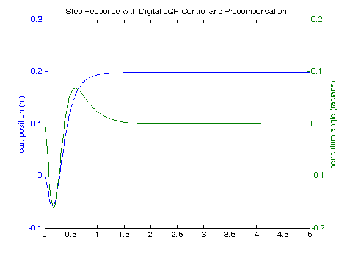
Notice that the steady-state error of the cart's position has been eliminated. Now we have designed a system that satisfies all of the design requirements. Note, however, that the scaling factor was designed based on a model of the system. If our model is in error or there are unknown disturbances, then the steady-state error will no longer be driven to zero.
Observer design
The above response satisfies all of the design requirements, however, it was found assuming all state variables of the system are measurable. This assumption may not be valid for all systems. In this section, we develop a technique for estimating the state of the system based on the measured outputs and a model of the plant. The object that estimates the state of system is called an observer. Thus, in this section we will design a full-order state observer to estimate all of the system's state variables, including those that are measured. For further explanation on how an observer works, please consult your control textbook.
A basic schematic of the observer-based state-feedback system is shown below.

Designing the observer equates to finding the observer gain matrix . To accomplish this, we need to first determine the closed-loop poles of the system without the observer (the eigenvalues
of  ). This can be achieved using the MATLAB command eig as shown below.
). This can be achieved using the MATLAB command eig as shown below.
poles = eig(A-B*K)
poles = 0.9157 + 0.0728i 0.9157 - 0.0728i 0.9535 + 0.0079i 0.9535 - 0.0079i
Since the observer is attempting to estimate the values of state variables which are themselves changing, it is desired that the dynamics of the observer be significantly faster than the dynamics of the closed-loop system without the observer. A common guideline is to make the estimator poles (eigenvalues of ) 4-10 times faster than the slowest controller pole (eigenvalue of ). Making the estimator poles too fast can be problematic if the measurement is corrupted by noise or there are errors in the sensor measurement in general. Based on the poles found above, we will place the observer poles at [-0.2 -0.21 -0.22 -0.23]. These poles can be modified later, if necessary. We will use the MATLAB function place to find the matrix. Add the following code to your m-file and re-run in the command window to generate the observer gain matrix shown below.
P = [-0.2 -0.21 -0.22 -0.23]; L = place(A',C',P)'
L =
2.4308 -0.0104
147.6324 -1.2418
-0.0131 2.4305
-1.8079 147.9057
Now we will obtain the overall system response including the observer. Add the following commands to your m-file and run to generate the response shown below.
Ace = [(A-B*K) (B*K);
zeros(size(A)) (A-L*C)];
Bce = [B*Nbar;
zeros(size(B))];
Cce = [Cc zeros(size(Cc))];
Dce = [0;0];
states = {'x' 'x_dot' 'phi' 'phi_dot' 'e1' 'e2' 'e3' 'e4'};
inputs = {'r'};
outputs = {'x'; 'phi'};
sys_est_cl = ss(Ace,Bce,Cce,Dce,Ts,'statename',states,'inputname',inputs,'outputname',outputs);
t = 0:0.01:5;
r = 0.2*ones(size(t));
[y,t,x]=lsim(sys_est_cl,r,t);
[AX,H1,H2] = plotyy(t,y(:,1),t,y(:,2),'plot');
set(get(AX(1),'Ylabel'),'String','cart position (m)')
set(get(AX(2),'Ylabel'),'String','pendulum angle (radians)')
title('Step Response with Digital Observer-Based State-Feedback Control')
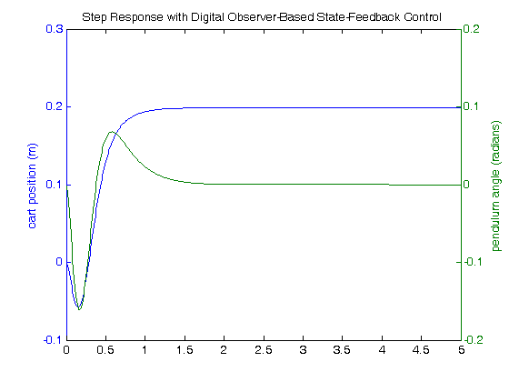 This response is almost identical to the response achieved when it was assumed that we had full access to the state variables. This is because the observer poles are fast, and because the model we assumed for the observer is identical to the model of the actual plant (including the same initial conditions). Therefore, all of the design requirements have been met with the minimal control effort expended. No further iteration is needed.